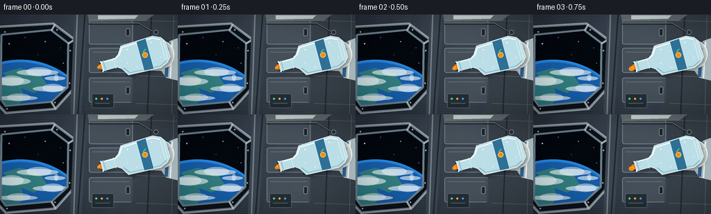
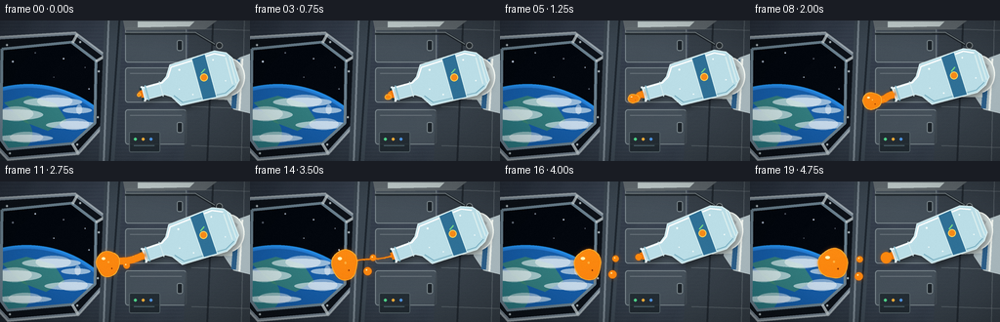
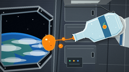

CODING AGENTS AS PIXEL WORLD MODELS
traex/GPT-5.6-Sol · phygen_003
点击播放 · 原生 RGB 像素
逐轮保存的候选
回放视频、检查图与代码变化。
每份候选均可单独播放。实际图片检查记录在下方工具轨迹中。
候选 01播放与检查图
点击播放 · 原生 RGB 像素


展开代码变化
--- 上一保存版本
+++ 本次保存版本
@@ -0,0 +1,355 @@
+from pathlib import Path
+import math
+import numpy as np
+from PIL import Image, ImageDraw, ImageFilter
+import artifact_io
+
+W, H, N = 256, 144, 20
+SS = 4
+WS, HS = W * SS, H * SS
+
+
+def sc(v):
+ return int(round(v * SS))
+
+
+def pts(seq):
+ return [(sc(x), sc(y)) for x, y in seq]
+
+
+def clamp(x, a=0.0, b=1.0):
+ return max(a, min(b, x))
+
+
+def smooth(a, b, x):
+ q = clamp((x - a) / (b - a))
+ return q * q * (3 - 2 * q)
+
+
+def make_background(frame_index):
+ # Brushed, cool-gray station wall.
+ yy, xx = np.mgrid[0:HS, 0:WS]
+ x = xx / SS
+ y = yy / SS
+ base = np.zeros((HS, WS, 3), dtype=np.float32)
+ base[..., 0] = 34 + 28 * (x / W) + 9 * (1 - y / H)
+ base[..., 1] = 42 + 30 * (x / W) + 9 * (1 - y / H)
+ base[..., 2] = 51 + 34 * (x / W) + 12 * (1 - y / H)
+ brushed = 2.0 * np.sin(y * 1.7) + 1.2 * np.sin(x * .19 + y * .11)
+ base += brushed[..., None]
+ img = Image.fromarray(np.uint8(np.clip(base, 0, 255)), 'RGB')
+ d = ImageDraw.Draw(img, 'RGBA')
+
+ # Recessed observation window, with the Earth behind it.
+ outer = [(-8, 17), (77, 12), (109, 36), (106, 108), (80, 137), (8, 143), (-7, 127)]
+ inner = [(2, 29), (73, 22), (98, 41), (97, 105), (74, 126), (8, 132), (1, 122)]
+ d.polygon(pts(outer), fill=(13, 18, 25, 255), outline=(113, 127, 139, 255), width=sc(3))
+
+ space = Image.new('RGB', (WS, HS), (3, 7, 14))
+ sd = ImageDraw.Draw(space, 'RGBA')
+ stars = [(13, 42, 1), (36, 33, .7), (65, 39, .8), (87, 48, .6), (20, 67, .5),
+ (55, 58, .5), (91, 70, .8), (42, 77, .45)]
+ for sx, sy, sr in stars:
+ tw = 0.7 + 0.3 * math.sin(frame_index * .32 + sx)
+ sd.ellipse((sc(sx-sr), sc(sy-sr), sc(sx+sr), sc(sy+sr)), fill=(220, 235, 255, int(230*tw)))
+
+ # Earth disk. A tiny horizontal drift gives the otherwise fixed cabin life.
+ drift = frame_index * .18
+ cx, cy, rad = 29 - drift, 179, 110
+ for rr in range(sc(rad + 4), sc(rad - 1), -1):
+ frac = (rr / SS - rad) / 4.0
+ col = (35, int(112 + 32 * frac), int(198 + 35 * frac), 180)
+ sd.ellipse((sc(cx)-rr, sc(cy)-rr, sc(cx)+rr, sc(cy)+rr), fill=col)
+ sd.ellipse((sc(cx-rad), sc(cy-rad), sc(cx+rad), sc(cy+rad)), fill=(22, 91, 164, 255))
+ # Ocean bands and land seen through the cupola.
+ sd.ellipse((sc(-38-drift), sc(91), sc(33-drift), sc(141)), fill=(51, 128, 114, 190))
+ sd.polygon(pts([(4-drift,84),(29-drift,77),(57-drift,85),(68-drift,102),(49-drift,113),(25-drift,104)]),
+ fill=(62, 135, 108, 180))
+ cloud_shift = drift * .7
+ for cloud in [(-15,91,44,102), (24,79,84,88), (47,103,101,111), (-4,117,54,124), (64,89,94,95)]:
+ x0,y0,x1,y1 = cloud
+ sd.ellipse((sc(x0-cloud_shift),sc(y0),sc(x1-cloud_shift),sc(y1)), fill=(235,246,249,155))
+ sd.ellipse((sc(x0+14-cloud_shift),sc(y0-3),sc(x1-10-cloud_shift),sc(y1+1)), fill=(250,252,251,115))
+
+ window_mask = Image.new('L', (WS, HS), 0)
+ ImageDraw.Draw(window_mask).polygon(pts(inner), fill=255)
+ img.paste(space, (0, 0), window_mask)
+ d = ImageDraw.Draw(img, 'RGBA')
+
+ # Thick pressure-window frame and fasteners.
+ d.line(pts(outer + [outer[0]]), fill=(176, 186, 191, 180), width=sc(2), joint='curve')
+ d.line(pts(inner + [inner[0]]), fill=(104, 126, 140, 255), width=sc(3), joint='curve')
+ d.line(pts([(79,14),(74,23)]), fill=(205,215,218,190), width=sc(3))
+ d.line(pts([(108,36),(98,42)]), fill=(205,215,218,190), width=sc(3))
+ d.line(pts([(80,136),(74,126)]), fill=(205,215,218,190), width=sc(3))
+ for bx, by in [(7,25),(82,22),(101,52),(100,99),(79,127),(10,136)]:
+ d.ellipse((sc(bx-1.4),sc(by-1.4),sc(bx+1.4),sc(by+1.4)), fill=(205,212,214,255), outline=(55,65,72,255), width=sc(.7))
+
+ # Structural divider and equipment lockers on the far wall.
+ d.polygon(pts([(107,0),(126,0),(117,144),(101,144)]), fill=(58,69,79,255))
+ d.line(pts([(111,0),(106,144)]), fill=(157,170,177,150), width=sc(2))
+ d.line(pts([(122,0),(112,144)]), fill=(14,20,26,160), width=sc(2))
+ for y0 in [7, 48, 91]:
+ d.rounded_rectangle((sc(128),sc(y0),sc(191),sc(y0+36)), radius=sc(3),
+ fill=(71,82,91,220), outline=(132,144,150,210), width=sc(1))
+ d.line(pts([(133,y0+6),(186,y0+6)]), fill=(180,190,193,75), width=sc(1))
+ d.rounded_rectangle((sc(181),sc(y0+13),sc(187),sc(y0+24)), radius=sc(2),
+ fill=(25,31,37,230), outline=(167,180,185,180), width=sc(1))
+ # Right wall panels recede behind bottle and glove.
+ d.polygon(pts([(194,0),(256,0),(256,144),(188,144)]), fill=(55,64,72,210))
+ for y0 in [8, 47, 88, 128]:
+ d.line(pts([(196,y0),(256,y0+2)]), fill=(126,137,142,130), width=sc(1))
+ d.line(pts([(218,0),(212,144)]), fill=(25,31,38,170), width=sc(2))
+ d.line(pts([(250,0),(247,144)]), fill=(145,156,160,90), width=sc(1))
+
+ # Ceiling light and cable/pipe details.
+ d.polygon(pts([(126,0),(222,0),(210,9),(128,10)]), fill=(104,112,116,230))
+ d.polygon(pts([(141,1),(199,1),(194,6),(141,7)]), fill=(218,231,229,210))
+ d.line(pts([(128,13),(201,13),(221,25)]), fill=(22,29,34,190), width=sc(3))
+ d.line(pts([(128,12),(200,12),(220,24)]), fill=(146,157,160,180), width=sc(1))
+ d.ellipse((sc(221),sc(22),sc(228),sc(29)), fill=(39,46,51,255), outline=(166,173,175,180), width=sc(1))
+
+ # Small status indicators (purely pictorial, not text).
+ d.rounded_rectangle((sc(132),sc(114),sc(164),sc(135)), radius=sc(2), fill=(31,40,46,220), outline=(116,132,138,150), width=sc(1))
+ for k, col in enumerate([(80,220,140,240),(255,183,55,230),(81,158,244,230)]):
+ d.ellipse((sc(137+8*k),sc(120),sc(140+8*k),sc(123)), fill=col)
+ d.line(pts([(137,128),(158,128)]), fill=(102,128,139,180), width=sc(1))
+
+ # Depth shadow on cabin edges and cinematic vignette.
+ arr = np.asarray(img).astype(np.float32)
+ X = (xx / SS - W/2)/(W/2)
+ Y = (yy / SS - H/2)/(H/2)
+ vig = np.clip(1.07 - .17*(X*X + Y*Y), .72, 1.0)
+ arr *= vig[...,None]
+ return Image.fromarray(np.uint8(np.clip(arr,0,255)), 'RGB').convert('RGBA')
+
+
+def tr_local(origin, angle, x, y):
+ ca, sa = math.cos(angle), math.sin(angle)
+ # Axis points from mouth toward bottle base; y is perpendicular in image space.
+ return origin[0] + x*ca + y*sa, origin[1] - x*sa + y*ca
+
+
+def draw_glove(layer, origin, angle, p):
+ d = ImageDraw.Draw(layer, 'RGBA')
+ # Glove and sleeve behind the bottle, turning gently with it.
+ # Sleeve enters from screen right.
+ wrist = tr_local(origin, angle, 88, 5)
+ d.polygon(pts([(256,34),(256,95),(239,91),(229,76),(232,50),(245,38)]),
+ fill=(166,181,186,255), outline=(226,236,235,230))
+ d.line(pts([(243,40),(239,90)]), fill=(44,93,135,255), width=sc(5))
+ d.line(pts([(248,39),(245,92)]), fill=(231,236,231,190), width=sc(2))
+ # Palm.
+ d.ellipse((sc(wrist[0]-14),sc(wrist[1]-19),sc(wrist[0]+19),sc(wrist[1]+20)),
+ fill=(205,215,214,255), outline=(245,249,244,255), width=sc(1.2))
+ # Four curled fingers crossing around the bottle's rear, individually shaded.
+ for j in range(4):
+ q0 = tr_local(origin, angle, 73 + j*5, -18 + j*2)
+ q1 = tr_local(origin, angle, 91 + j*3, -9 + j*4)
+ d.line(pts([q0,q1]), fill=(154+8*j,166+7*j,168+7*j,255), width=sc(8-j*.5))
+ d.line(pts([(q0[0]-1,q0[1]-1),(q1[0]-1,q1[1]-1)]), fill=(229,235,231,180), width=sc(2))
+ # Thumb is visible below the body.
+ t0 = tr_local(origin, angle, 69, 19)
+ t1 = tr_local(origin, angle, 88, 25)
+ d.line(pts([t0,t1]), fill=(196,207,205,255), width=sc(10))
+ d.ellipse((sc(t0[0]-4),sc(t0[1]-4),sc(t0[0]+5),sc(t0[1]+5)), fill=(232,238,234,230))
+ # Suit seam marks.
+ d.arc((sc(wrist[0]-11),sc(wrist[1]-14),sc(wrist[0]+15),sc(wrist[1]+15)), 65, 195,
+ fill=(118,136,140,180), width=sc(1))
+
+
+def draw_bottle(layer, origin, angle, p):
+ shape = [(0,-7),(22,-7),(28,-11),(35,-22),(83,-24),(94,-19),(99,-12),(100,12),
+ (94,19),(83,24),(35,22),(28,11),(22,7),(0,7)]
+ poly = [tr_local(origin,angle,x,y) for x,y in shape]
+
+ # Cast shadow under bottle glass.
+ sh = Image.new('RGBA',(WS,HS),(0,0,0,0))
+ sd = ImageDraw.Draw(sh,'RGBA')
+ sd.polygon(pts([(x+2,y+3) for x,y in poly]), fill=(0,0,0,100))
+ sh = sh.filter(ImageFilter.GaussianBlur(sc(3)))
+ layer.alpha_composite(sh)
+
+ # Glass body mask.
+ bodymask = Image.new('L',(WS,HS),0)
+ ImageDraw.Draw(bodymask).polygon(pts(poly), fill=255)
+
+ # Juice remaining inside: reservoir retreats toward the base, while a thin
+ # central tongue keeps feeding the neck in zero gravity.
+ fill = 1.0 - .58*smooth(.04,1.0,p)
+ cutoff = 37 + (1-fill)*46
+ liquid_shape = [(3,-4),(29,-5),(36,-12),(cutoff,-17),(92,-16),(96,-10),(96,10),
+ (91,16),(cutoff,17),(37,11),(29,5),(3,4)]
+ lpoly = [tr_local(origin,angle,x,y) for x,y in liquid_shape]
+ lm = Image.new('L',(WS,HS),0)
+ ld = ImageDraw.Draw(lm)
+ ld.polygon(pts(lpoly),fill=220)
+ lm = Image.composite(lm,Image.new('L',(WS,HS),0),bodymask)
+
+ # Rich orange reservoir gradient.
+ yy,xx = np.mgrid[0:HS,0:WS]
+ orange = np.empty((HS,WS,4),dtype=np.uint8)
+ orange[...,0] = np.clip(242 + 10*(1-yy/HS),0,255)
+ orange[...,1] = np.clip(91 + 58*(1-yy/HS),0,255)
+ orange[...,2] = 8
+ orange[...,3] = np.asarray(lm)
+ layer.alpha_composite(Image.fromarray(orange,'RGBA'))
+
+ d = ImageDraw.Draw(layer,'RGBA')
+ # Bottle wall, cool reflections, rim, and molded base.
+ d.polygon(pts(poly), fill=(187,222,231,28), outline=(220,240,242,215), width=sc(1.1))
+ upper = [tr_local(origin,angle,x,y) for x,y in [(3,-6),(23,-6),(30,-10),(36,-19),(82,-21),(92,-16)]]
+ lower = [tr_local(origin,angle,x,y) for x,y in [(31,10),(38,19),(83,21),(93,16)]]
+ d.line(pts(upper), fill=(255,255,255,195), width=sc(1.4))
+ d.line(pts(lower), fill=(117,172,191,130), width=sc(1.1))
+ for x in [92,96]:
+ a=tr_local(origin,angle,x,-14); b=tr_local(origin,angle,x,14)
+ d.line(pts([a,b]), fill=(225,241,240,125), width=sc(1))
+
+ # Subtle blue label band and orange fruit emblem.
+ label = [tr_local(origin,angle,x,y) for x,y in [(58,-22),(73,-23),(73,23),(58,22)]]
+ d.polygon(pts(label), fill=(47,112,150,72), outline=(213,237,239,105), width=sc(.7))
+ icon = tr_local(origin,angle,65.5,0)
+ d.ellipse((sc(icon[0]-4),sc(icon[1]-4),sc(icon[0]+4),sc(icon[1]+4)), fill=(247,138,24,180), outline=(255,210,89,190), width=sc(1))
+ leaf0=tr_local(origin,angle,64,-5); leaf1=tr_local(origin,angle,69,-8)
+ d.line(pts([leaf0,leaf1]), fill=(112,210,132,220), width=sc(1.4))
+
+ # Open neck rings make the exit unambiguous.
+ for x,wid,col in [(1,2.0,(236,248,249,240)),(5,1.2,(132,188,205,210)),(20,1,(211,234,238,170))]:
+ a=tr_local(origin,angle,x,-8); b=tr_local(origin,angle,x,8)
+ d.line(pts([a,b]), fill=col, width=sc(wid))
+ mouth = tr_local(origin,angle,-.5,0)
+ # Dark opening and orange core visible within.
+ mv = (math.sin(angle)*6.3, math.cos(angle)*6.3)
+ d.line(pts([(mouth[0]-mv[0],mouth[1]-mv[1]),(mouth[0]+mv[0],mouth[1]+mv[1])]), fill=(25,55,65,230), width=sc(2.3))
+ d.line(pts([(mouth[0]-mv[0]*.62,mouth[1]-mv[1]*.62),(mouth[0]+mv[0]*.62,mouth[1]+mv[1]*.62)]), fill=(245,126,16,255), width=sc(2.4))
+
+ # Condensation/refraction glints.
+ for x,y,r in [(43,-14,1.0),(50,14,.7),(79,-15,.8),(86,9,.65),(38,5,.55)]:
+ q=tr_local(origin,angle,x,y)
+ d.ellipse((sc(q[0]-r),sc(q[1]-r),sc(q[0]+r),sc(q[1]+r)), fill=(245,253,251,155))
+ return mouth
+
+
+def irregular_blob(cx, cy, rx, ry, phase, count=64):
+ out=[]
+ for k in range(count):
+ a=2*math.pi*k/count
+ wob=1 + .035*math.sin(3*a+phase) + .018*math.sin(5*a-phase*.7)
+ out.append((cx + rx*wob*math.cos(a), cy + ry*wob*math.sin(a)))
+ return out
+
+
+def draw_juice(layer, mouth, angle, p):
+ # Build a shared mask for stream and blobs, then shade as a cohesive fluid.
+ mask = Image.new('L',(WS,HS),0)
+ md = ImageDraw.Draw(mask)
+ q = smooth(.02,1,p)
+ axis = (-math.cos(angle), math.sin(angle)) # out through neck, away from bottle
+
+ # Primary globule grows, stretches and drifts freely once the neck stream pinches.
+ travel = smooth(.08,1,p)
+ cx = mouth[0] + axis[0]*(3 + 61*travel)
+ cy = mouth[1] + axis[1]*(3 + 25*travel) + 3.2*math.sin(p*math.pi*1.2)
+ r = 1.7 + 13.5*smooth(.03,.78,p)
+ stretch = .25*math.sin(p*math.pi*2.0)*math.exp(-.8*p)
+ rx, ry = r*(1+stretch), r*(1-.32*stretch)
+ main_poly = irregular_blob(cx,cy,rx,ry,p*5.2)
+ md.polygon(pts(main_poly), fill=255)
+
+ # First phase: a sinuous continuous rope. It thins before pinching off.
+ rope_alpha = 1.0 - smooth(.61,.78,p)
+ if rope_alpha > .01:
+ start=(mouth[0]+axis[0]*1.5,mouth[1]+axis[1]*1.5)
+ end=(cx-axis[0]*rx*.55,cy-axis[1]*ry*.55)
+ curve=[]
+ for j in range(25):
+ u=j/24
+ bx=(1-u)*start[0]+u*end[0]
+ by=(1-u)*start[1]+u*end[1]
+ bow=math.sin(math.pi*u)*(2.1*math.sin(p*7+u*2))
+ curve.append((bx-axis[1]*bow,by+axis[0]*bow))
+ thickness=(2.1+4.6*smooth(.06,.38,p))*rope_alpha + .5
+ md.line(pts(curve),fill=255,width=max(sc(thickness),1),joint='curve')
+ for x,y in curve[::4]:
+ md.ellipse((sc(x-thickness/2),sc(y-thickness/2),sc(x+thickness/2),sc(y+thickness/2)),fill=255)
+
+ # After pinch-off, a fresh bead and short tongue remain at the lip.
+ fresh = smooth(.66,1,p)
+ fresh_r = .4 + 5.3*fresh
+ fresh_c=(mouth[0]+axis[0]*(1+5*fresh), mouth[1]+axis[1]*(1+5*fresh))
+ if fresh > .01:
+ md.line(pts([mouth,fresh_c]),fill=255,width=sc(1.5+2.4*fresh))
+ md.ellipse((sc(fresh_c[0]-fresh_r),sc(fresh_c[1]-fresh_r),sc(fresh_c[0]+fresh_r),sc(fresh_c[1]+fresh_r)),fill=255)
+
+ # Two satellite drops detach at different times and fan out slightly.
+ satellites=[]
+ for birth, side, speed, maxr in [(.29,-1,32,3.7),(.48,1,25,2.8)]:
+ z=smooth(birth,1,p)
+ if z>0:
+ sx=mouth[0]+axis[0]*(7+speed*z) + (-axis[1])*side*(2+6*z)
+ sy=mouth[1]+axis[1]*(7+speed*z) + axis[0]*side*(2+6*z)
+ sr=.4+maxr*smooth(0,.52,z)
+ satellites.append((sx,sy,sr))
+ md.ellipse((sc(sx-sr),sc(sy-sr),sc(sx+sr),sc(sy+sr)),fill=255)
+
+ # Orange glow/edge emphasizes translucency against a busy cabin.
+ glow = mask.filter(ImageFilter.GaussianBlur(sc(2.2)))
+ glow_rgba=Image.new('RGBA',(WS,HS),(255,116,8,0)); glow_rgba.putalpha(glow.point(lambda v:int(v*.32)))
+ layer.alpha_composite(glow_rgba)
+ edge = mask.filter(ImageFilter.GaussianBlur(sc(.75)))
+ edge_rgba=Image.new('RGBA',(WS,HS),(154,56,0,0)); edge_rgba.putalpha(edge.point(lambda v:int(v*.7)))
+ layer.alpha_composite(edge_rgba)
+
+ # Vertical and horizontal shading inside the fluid.
+ yy,xx=np.mgrid[0:HS,0:WS]
+ # Highlights at upper-left, darker amber on lower-right.
+ light=np.clip(.66 + .34*(1-yy/HS) + .08*(1-xx/WS),0,1)
+ rgba=np.empty((HS,WS,4),dtype=np.uint8)
+ rgba[...,0]=np.clip(232+23*light,0,255)
+ rgba[...,1]=np.clip(65+83*light,0,255)
+ rgba[...,2]=np.clip(3+15*light,0,255)
+ rgba[...,3]=np.asarray(mask)
+ layer.alpha_composite(Image.fromarray(rgba,'RGBA'))
+
+ # Surface outline and wet speculars.
+ d=ImageDraw.Draw(layer,'RGBA')
+ d.line(pts(main_poly+[main_poly[0]]),fill=(255,181,54,235),width=sc(.8),joint='curve')
+ if r>3:
+ hx=cx-rx*.32; hy=cy-ry*.38
+ d.ellipse((sc(hx-rx*.22),sc(hy-ry*.12),sc(hx+rx*.10),sc(hy+ry*.08)),fill=(255,244,180,190))
+ d.ellipse((sc(cx+rx*.28),sc(cy+ry*.31),sc(cx+rx*.38),sc(cy+ry*.42)),fill=(143,53,1,115))
+ # Entrained bubbles inside the floating juice sphere.
+ if p>.35:
+ br=max(.45,r*.06)
+ d.ellipse((sc(cx+rx*.05-br),sc(cy-ry*.12-br),sc(cx+rx*.05+br),sc(cy-ry*.12+br)),outline=(255,211,104,170),width=sc(.6))
+ for sx,sy,sr in satellites:
+ d.ellipse((sc(sx-sr*.45),sc(sy-sr*.48),sc(sx-sr*.08),sc(sy-sr*.12)),fill=(255,239,166,190))
+
+
+def render_frame(i):
+ p=i/(N-1)
+ layer=make_background(i)
+ # Slow hand rotation communicates deliberate pouring rather than arbitrary drift.
+ angle=math.radians(15 + 5.5*smooth(.05,.88,p))
+ origin=(145.5 + .8*math.sin(p*math.pi), 75.2 + .7*math.sin(p*math.pi*.7))
+ draw_glove(layer,origin,angle,p)
+ mouth=draw_bottle(layer,origin,angle,p)
+ # Fluid lies in front of mouth rim and background.
+ draw_juice(layer,mouth,angle,p)
+
+ # Overall cool station light and restrained film grain for cohesion.
+ rgb=np.asarray(layer.convert('RGB').resize((W,H),Image.Resampling.LANCZOS)).astype(np.int16)
+ rng=np.random.default_rng(4100+i)
+ grain=rng.normal(0,.55,rgb.shape[:2])[:,:,None]
+ rgb=np.clip(rgb+grain,0,255).astype(np.uint8)
+ return rgb
+
+
+def main():
+ frames=np.stack([render_frame(i) for i in range(N)],axis=0)
+ artifact_io.save(frames,Path(__file__).resolve().parent)
+
+
+if __name__=='__main__':
+ main()
可观测工具轨迹
实际执行的命令与返回图片。
命令 1exit 0
/bin/bash -lc "cat prompt.txt && printf '\\n--- GENERATION_RULES.md ---\\n' && cat GENERATION_RULES.md"
命令 2exit 0
/bin/bash -lc "cat task_spec.json && printf '\\n--- FILES ---\\n' && find . -maxdepth 2 -type f -printf '%p\\n' | sort"
命令 3exit 0
/bin/bash -lc 'cat artifact_io.py'
命令 4exit 0
/bin/bash -lc "cat > generate.py <<'PY'
from pathlib import Path
import math
import numpy as np
from PIL import Image, ImageDraw, ImageFilter
import artifact_io
W, H, N = 256, 144, 20
SS = 4
WS, HS = W * SS, H * SS
def sc(v):
return int(round(v * SS))
def pts(seq):
return [(sc(x), sc(y)) for x, y in seq]
def clamp(x, a=0.0, b=1.0):
return max(a, min(b, x))
def smooth(a, b, x):
q = clamp((x - a) / (b - a))
return q * q * (3 - 2 * q)
def make_background(frame_index):
# Brushed, cool-gray station wall.
yy, xx = np.mgrid[0:HS, 0:WS]
x = xx / SS
y = yy / SS
base = np.zeros((HS, WS, 3), dtype=np.float32)
base[..., 0] = 34 + 28 * (x / W) + 9 * (1 - y / H)
base[..., 1] = 42 + 30 * (x / W) + 9 * (1 - y / H)
base[..., 2] = 51 + 34 * (x / W) + 12 * (1 - y / H)
brushed = 2.0 * np.sin(y * 1.7) + 1.2 * np.sin(x * .19 + y * .11)
base += brushed[..., None]
img = Image.fromarray(np.uint8(np.clip(base, 0, 255)), 'RGB')
d = ImageDraw.Draw(img, 'RGBA')
# Recessed observation window, with the Earth behind it.
outer = [(-8, 17), (77, 12), (109, 36), (106, 108), (80, 137), (8, 143), (-7, 127)]
inner = [(2, 29), (73, 22), (98, 41), (97, 105), (74, 126), (8, 132), (1, 122)]
d.polygon(pts(outer), fill=(13, 18, 25, 255), outline=(113, 127, 139, 255), width=sc(3))
space = Image.new('RGB', (WS, HS), (3, 7, 14))
sd = ImageDraw.Draw(space, 'RGBA')
stars = [(13, 42, 1), (36, 33, .7), (65, 39, .8), (87, 48, .6), (20, 67, .5),
(55, 58, .5), (91, 70, .8), (42, 77, .45)]
for sx, sy, sr in stars:
tw = 0.7 + 0.3 * math.sin(frame_index * .32 + sx)
sd.ellipse((sc(sx-sr), sc(sy-sr), sc(sx+sr), sc(sy+sr)), fill=(220, 235, 255, int(230*tw)))
# Earth disk. A tiny horizontal drift gives the otherwise fixed cabin life.
drift = frame_index * .18
cx, cy, rad = 29 - drift, 179, 110
for rr in range(sc(rad + 4), sc(rad - 1), -1):
frac = (rr / SS - rad) / 4.0
col = (35, int(112 + 32 * frac), int(198 + 35 * frac), 180)
sd.ellipse((sc(cx)-rr, sc(cy)-rr, sc(cx)+rr, sc(cy)+rr), fill=col)
sd.ellipse((sc(cx-rad), sc(cy-rad), sc(cx+rad), sc(cy+rad)), fill=(22, 91, 164, 255))
# Ocean bands and land seen through the cupola.
sd.ellipse((sc(-38-drift), sc(91), sc(33-drift), sc(141)), fill=(51, 128, 114, 190))
sd.polygon(pts([(4-drift,84),(29-drift,77),(57-drift,85),(68-drift,102),(49-drift,113),(25-drift,104)]),
fill=(62, 135, 108, 180))
cloud_shift = drift * .7
for cloud in [(-15,91,44,102), (24,79,84,88), (47,103,101,111), (-4,117,54,124), (64,89,94,95)]:
x0,y0,x1,y1 = cloud
sd.ellipse((sc(x0-cloud_shift),sc(y0),sc(x1-cloud_shift),sc(y1)), fill=(235,246,249,155))
sd.ellipse((sc(x0+14-cloud_shift),sc(y0-3),sc(x1-10-cloud_shift),sc(y1+1)), fill=(250,252,251,115))
window_mask = Image.new('L', (WS, HS), 0)
ImageDraw.Draw(window_mask).polygon(pts(inner), fill=255)
img.paste(space, (0, 0), window_mask)
d = ImageDraw.Draw(img, 'RGBA')
# Thick pressure-window frame and fasteners.
d.line(pts(outer + [outer[0]]), fill=(176, 186, 191, 180), width=sc(2), joint='curve')
d.line(pts(inner + [inner[0]]), fill=(104, 126, 140, 255), width=sc(3), joint='curve')
d.line(pts([(79,14),(74,23)]), fill=(205,215,218,190), width=sc(3))
d.line(pts([(108,36),(98,42)]), fill=(205,215,218,190), width=sc(3))
d.line(pts([(80,136),(74,126)]), fill=(205,215,218,190), width=sc(3))
for bx, by in [(7,25),(82,22),(101,52),(100,99),(79,127),(10,136)]:
d.ellipse((sc(bx-1.4),sc(by-1.4),sc(bx+1.4),sc(by+1.4)), fill=(205,212,214,255), outline=(55,65,72,255), width=sc(.7))
# Structural divider and equipment lockers on the far wall.
d.polygon(pts([(107,0),(126,0),(117,144),(101,144)]), fill=(58,69,79,255))
d.line(pts([(111,0),(106,144)]), fill=(157,170,177,150), width=sc(2))
d.line(pts([(122,0),(112,144)]), fill=(14,20,26,160), width=sc(2))
for y0 in [7, 48, 91]:
d.rounded_rectangle((sc(128),sc(y0),sc(191),sc(y0+36)), radius=sc(3),
fill=(71,82,91,220), outline=(132,144,150,210), width=sc(1))
d.line(pts([(133,y0+6),(186,y0+6)]), fill=(180,190,193,75), width=sc(1))
d.rounded_rectangle((sc(181),sc(y0+13),sc(187),sc(y0+24)), radius=sc(2),
fill=(25,31,37,230), outline=(167,180,185,180), width=sc(1))
# Right wall panels recede behind bottle and glove.
d.polygon(pts([(194,0),(256,0),(256,144),(188,144)]), fill=(55,64,72,210))
for y0 in [8, 47, 88, 128]:
d.line(pts([(196,y0),(256,y0+2)]), fill=(126,137,142,130), width=sc(1))
d.line(pts([(218,0),(212,144)]), fill=(25,31,38,170), width=sc(2))
d.line(pts([(250,0),(247,144)]), fill=(145,156,160,90), width=sc(1))
# Ceiling light and cable/pipe details.
d.polygon(pts([(126,0),(222,0),(210,9),(128,10)]), fill=(104,112,116,230))
d.polygon(pts([(141,1),(199,1),(194,6),(141,7)]), fill=(218,231,229,210))
d.line(pts([(128,13),(201,13),(221,25)]), fill=(22,29,34,190), width=sc(3))
d.line(pts([(128,12),(200,12),(220,24)]), fill=(146,157,160,180), width=sc(1))
d.ellipse((sc(221),sc(22),sc(228),sc(29)), fill=(39,46,51,255), outline=(166,173,175,180), width=sc(1))
# Small status indicators (purely pictorial, not text).
d.rounded_rectangle((sc(132),sc(114),sc(164),sc(135)), radius=sc(2), fill=(31,40,46,220), outline=(116,132,138,150), width=sc(1))
for k, col in enumerate([(80,220,140,240),(255,183,55,230),(81,158,244,230)]):
d.ellipse((sc(137+8*k),sc(120),sc(140+8*k),sc(123)), fill=col)
d.line(pts([(137,128),(158,128)]), fill=(102,128,139,180), width=sc(1))
# Depth shadow on cabin edges and cinematic vignette.
arr = np.asarray(img).astype(np.float32)
X = (xx / SS - W/2)/(W/2)
Y = (yy / SS - H/2)/(H/2)
vig = np.clip(1.07 - .17*(X*X + Y*Y), .72, 1.0)
arr *= vig[...,None]
return Image.fromarray(np.uint8(np.clip(arr,0,255)), 'RGB').convert('RGBA')
def tr_local(origin, angle, x, y):
ca, sa = math.cos(angle), math.sin(angle)
# Axis points from mouth toward bottle base; y is perpendicular in image space.
return origin[0] + x*ca + y*sa, origin[1] - x*sa + y*ca
def draw_glove(layer, origin, angle, p):
d = ImageDraw.Draw(layer, 'RGBA')
# Glove and sleeve behind the bottle, turning gently with it.
# Sleeve enters from screen right.
wrist = tr_local(origin, angle, 88, 5)
d.polygon(pts([(256,34),(256,95),(239,91),(229,76),(232,50),(245,38)]),
fill=(166,181,186,255), outline=(226,236,235,230))
d.line(pts([(243,40),(239,90)]), fill=(44,93,135,255), width=sc(5))
d.line(pts([(248,39),(245,92)]), fill=(231,236,231,190), width=sc(2))
# Palm.
d.ellipse((sc(wrist[0]-14),sc(wrist[1]-19),sc(wrist[0]+19),sc(wrist[1]+20)),
fill=(205,215,214,255), outline=(245,249,244,255), width=sc(1.2))
# Four curled fingers crossing around the bottle's rear, individually shaded.
for j in range(4):
q0 = tr_local(origin, angle, 73 + j*5, -18 + j*2)
q1 = tr_local(origin, angle, 91 + j*3, -9 + j*4)
d.line(pts([q0,q1]), fill=(154+8*j,166+7*j,168+7*j,255), width=sc(8-j*.5))
d.line(pts([(q0[0]-1,q0[1]-1),(q1[0]-1,q1[1]-1)]), fill=(229,235,231,180), width=sc(2))
# Thumb is visible below the body.
t0 = tr_local(origin, angle, 69, 19)
t1 = tr_local(origin, angle, 88, 25)
d.line(pts([t0,t1]), fill=(196,207,205,255), width=sc(10))
d.ellipse((sc(t0[0]-4),sc(t0[1]-4),sc(t0[0]+5),sc(t0[1]+5)), fill=(232,238,234,230))
# Suit seam marks.
d.arc((sc(wrist[0]-11),sc(wrist[1]-14),sc(wrist[0]+15),sc(wrist[1]+15)), 65, 195,
fill=(118,136,140,180), width=sc(1))
def draw_bottle(layer, origin, angle, p):
shape = [(0,-7),(22,-7),(28,-11),(35,-22),(83,-24),(94,-19),(99,-12),(100,12),
(94,19),(83,24),(35,22),(28,11),(22,7),(0,7)]
poly = [tr_local(origin,angle,x,y) for x,y in shape]
# Cast shadow under bottle glass.
sh = Image.new('RGBA',(WS,HS),(0,0,0,0))
sd = ImageDraw.Draw(sh,'RGBA')
sd.polygon(pts([(x+2,y+3) for x,y in poly]), fill=(0,0,0,100))
sh = sh.filter(ImageFilter.GaussianBlur(sc(3)))
layer.alpha_composite(sh)
# Glass body mask.
bodymask = Image.new('L',(WS,HS),0)
ImageDraw.Draw(bodymask).polygon(pts(poly), fill=255)
# Juice remaining inside: reservoir retreats toward the base, while a thin
# central tongue keeps feeding the neck in zero gravity.
fill = 1.0 - .58*smooth(.04,1.0,p)
cutoff = 37 + (1-fill)*46
liquid_shape = [(3,-4),(29,-5),(36,-12),(cutoff,-17),(92,-16),(96,-10),(96,10),
(91,16),(cutoff,17),(37,11),(29,5),(3,4)]
lpoly = [tr_local(origin,angle,x,y) for x,y in liquid_shape]
lm = Image.new('L',(WS,HS),0)
ld = ImageDraw.Draw(lm)
ld.polygon(pts(lpoly),fill=220)
lm = Image.composite(lm,Image.new('L',(WS,HS),0),bodymask)
# Rich orange reservoir gradient.
yy,xx = np.mgrid[0:HS,0:WS]
orange = np.empty((HS,WS,4),dtype=np.uint8)
orange[...,0] = np.clip(242 + 10*(1-yy/HS),0,255)
orange[...,1] = np.clip(91 + 58*(1-yy/HS),0,255)
orange[...,2] = 8
orange[...,3] = np.asarray(lm)
layer.alpha_composite(Image.fromarray(orange,'RGBA'))
d = ImageDraw.Draw(layer,'RGBA')
# Bottle wall, cool reflections, rim, and molded base.
d.polygon(pts(poly), fill=(187,222,231,28), outline=(220,240,242,215), width=sc(1.1))
upper = [tr_local(origin,angle,x,y) for x,y in [(3,-6),(23,-6),(30,-10),(36,-19),(82,-21),(92,-16)]]
lower = [tr_local(origin,angle,x,y) for x,y in [(31,10),(38,19),(83,21),(93,16)]]
d.line(pts(upper), fill=(255,255,255,195), width=sc(1.4))
d.line(pts(lower), fill=(117,172,191,130), width=sc(1.1))
for x in [92,96]:
a=tr_local(origin,angle,x,-14); b=tr_local(origin,angle,x,14)
d.line(pts([a,b]), fill=(225,241,240,125), width=sc(1))
# Subtle blue label band and orange fruit emblem.
label = [tr_local(origin,angle,x,y) for x,y in [(58,-22),(73,-23),(73,23),(58,22)]]
d.polygon(pts(label), fill=(47,112,150,72), outline=(213,237,239,105), width=sc(.7))
icon = tr_local(origin,angle,65.5,0)
d.ellipse((sc(icon[0]-4),sc(icon[1]-4),sc(icon[0]+4),sc(icon[1]+4)), fill=(247,138,24,180), outline=(255,210,89,190), width=sc(1))
leaf0=tr_local(origin,angle,64,-5); leaf1=tr_local(origin,angle,69,-8)
d.line(pts([leaf0,leaf1]), fill=(112,210,132,220), width=sc(1.4))
# Open neck rings make the exit unambiguous.
for x,wid,col in [(1,2.0,(236,248,249,240)),(5,1.2,(132,188,205,210)),(20,1,(211,234,238,170))]:
a=tr_local(origin,angle,x,-8); b=tr_local(origin,angle,x,8)
d.line(pts([a,b]), fill=col, width=sc(wid))
mouth = tr_local(origin,angle,-.5,0)
# Dark opening and orange core visible within.
mv = (math.sin(angle)*6.3, math.cos(angle)*6.3)
d.line(pts([(mouth[0]-mv[0],mouth[1]-mv[1]),(mouth[0]+mv[0],mouth[1]+mv[1])]), fill=(25,55,65,230), width=sc(2.3))
d.line(pts([(mouth[0]-mv[0]*.62,mouth[1]-mv[1]*.62),(mouth[0]+mv[0]*.62,mouth[1]+mv[1]*.62)]), fill=(245,126,16,255), width=sc(2.4))
# Condensation/refraction glints.
for x,y,r in [(43,-14,1.0),(50,14,.7),(79,-15,.8),(86,9,.65),(38,5,.55)]:
q=tr_local(origin,angle,x,y)
d.ellipse((sc(q[0]-r),sc(q[1]-r),sc(q[0]+r),sc(q[1]+r)), fill=(245,253,251,155))
return mouth
def irregular_blob(cx, cy, rx, ry, phase, count=64):
out=[]
for k in range(count):
a=2*math.pi*k/count
wob=1 + .035*math.sin(3*a+phase) + .018*math.sin(5*a-phase*.7)
out.append((cx + rx*wob*math.cos(a), cy + ry*wob*math.sin(a)))
return out
def draw_juice(layer, mouth, angle, p):
# Build a shared mask for stream and blobs, then shade as a cohesive fluid.
mask = Image.new('L',(WS,HS),0)
md = ImageDraw.Draw(mask)
q = smooth(.02,1,p)
axis = (-math.cos(angle), math.sin(angle)) # out through neck, away from bottle
# Primary globule grows, stretches and drifts freely once the neck stream pinches.
travel = smooth(.08,1,p)
cx = mouth[0] + axis[0]*(3 + 61*travel)
cy = mouth[1] + axis[1]*(3 + 25*travel) + 3.2*math.sin(p*math.pi*1.2)
r = 1.7 + 13.5*smooth(.03,.78,p)
stretch = .25*math.sin(p*math.pi*2.0)*math.exp(-.8*p)
rx, ry = r*(1+stretch), r*(1-.32*stretch)
main_poly = irregular_blob(cx,cy,rx,ry,p*5.2)
md.polygon(pts(main_poly), fill=255)
# First phase: a sinuous continuous rope. It thins before pinching off.
rope_alpha = 1.0 - smooth(.61,.78,p)
if rope_alpha > .01:
start=(mouth[0]+axis[0]*1.5,mouth[1]+axis[1]*1.5)
end=(cx-axis[0]*rx*.55,cy-axis[1]*ry*.55)
curve=[]
for j in range(25):
u=j/24
bx=(1-u)*start[0]+u*end[0]
by=(1-u)*start[1]+u*end[1]
bow=math.sin(math.pi*u)*(2.1*math.sin(p*7+u*2))
curve.append((bx-axis[1]*bow,by+axis[0]*bow))
thickness=(2.1+4.6*smooth(.06,.38,p))*rope_alpha + .5
md.line(pts(curve),fill=255,width=max(sc(thickness),1),joint='curve')
for x,y in curve[::4]:
md.ellipse((sc(x-thickness/2),sc(y-thickness/2),sc(x+thickness/2),sc(y+thickness/2)),fill=255)
# After pinch-off, a fresh bead and short tongue remain at the lip.
fresh = smooth(.66,1,p)
fresh_r = .4 + 5.3*fresh
fresh_c=(mouth[0]+axis[0]*(1+5*fresh), mouth[1]+axis[1]*(1+5*fresh))
if fresh > .01:
md.line(pts([mouth,fresh_c]),fill=255,width=sc(1.5+2.4*fresh))
md.ellipse((sc(fresh_c[0]-fresh_r),sc(fresh_c[1]-fresh_r),sc(fresh_c[0]+fresh_r),sc(fresh_c[1]+fresh_r)),fill=255)
# Two satellite drops detach at different times and fan out slightly.
satellites=[]
for birth, side, speed, maxr in [(.29,-1,32,3.7),(.48,1,25,2.8)]:
z=smooth(birth,1,p)
if z>0:
sx=mouth[0]+axis[0]*(7+speed*z) + (-axis[1])*side*(2+6*z)
sy=mouth[1]+axis[1]*(7+speed*z) + axis[0]*side*(2+6*z)
sr=.4+maxr*smooth(0,.52,z)
satellites.append((sx,sy,sr))
md.ellipse((sc(sx-sr),sc(sy-sr),sc(sx+sr),sc(sy+sr)),fill=255)
# Orange glow/edge emphasizes translucency against a busy cabin.
glow = mask.filter(ImageFilter.GaussianBlur(sc(2.2)))
glow_rgba=Image.new('RGBA',(WS,HS),(255,116,8,0)); glow_rgba.putalpha(glow.point(lambda v:int(v*.32)))
layer.alpha_composite(glow_rgba)
edge = mask.filter(ImageFilter.GaussianBlur(sc(.75)))
edge_rgba=Image.new('RGBA',(WS,HS),(154,56,0,0)); edge_rgba.putalpha(edge.point(lambda v:int(v*.7)))
layer.alpha_composite(edge_rgba)
# Vertical and horizontal shading inside the fluid.
yy,xx=np.mgrid[0:HS,0:WS]
# Highlights at upper-left, darker amber on lower-right.
light=np.clip(.66 + .34*(1-yy/HS) + .08*(1-xx/WS),0,1)
rgba=np.empty((HS,WS,4),dtype=np.uint8)
rgba[...,0]=np.clip(232+23*light,0,255)
rgba[...,1]=np.clip(65+83*light,0,255)
rgba[...,2]=np.clip(3+15*light,0,255)
rgba[...,3]=np.asarray(mask)
layer.alpha_composite(Image.fromarray(rgba,'RGBA'))
# Surface outline and wet speculars.
d=ImageDraw.Draw(layer,'RGBA')
d.line(pts(main_poly+[main_poly[0]]),fill=(255,181,54,235),width=sc(.8),joint='curve')
if r>3:
hx=cx-rx*.32; hy=cy-ry*.38
d.ellipse((sc(hx-rx*.22),sc(hy-ry*.12),sc(hx+rx*.10),sc(hy+ry*.08)),fill=(255,244,180,190))
d.ellipse((sc(cx+rx*.28),sc(cy+ry*.31),sc(cx+rx*.38),sc(cy+ry*.42)),fill=(143,53,1,115))
# Entrained bubbles inside the floating juice sphere.
if p>.35:
br=max(.45,r*.06)
d.ellipse((sc(cx+rx*.05-br),sc(cy-ry*.12-br),sc(cx+rx*.05+br),sc(cy-ry*.12+br)),outline=(255,211,104,170),width=sc(.6))
for sx,sy,sr in satellites:
d.ellipse((sc(sx-sr*.45),sc(sy-sr*.48),sc(sx-sr*.08),sc(sy-sr*.12)),fill=(255,239,166,190))
def render_frame(i):
p=i/(N-1)
layer=make_background(i)
# Slow hand rotation communicates deliberate pouring rather than arbitrary drift.
angle=math.radians(15 + 5.5*smooth(.05,.88,p))
origin=(145.5 + .8*math.sin(p*math.pi), 75.2 + .7*math.sin(p*math.pi*.7))
draw_glove(layer,origin,angle,p)
mouth=draw_bottle(layer,origin,angle,p)
# Fluid lies in front of mouth rim and background.
draw_juice(layer,mouth,angle,p)
# Overall cool station light and restrained film grain for cohesion.
rgb=np.asarray(layer.convert('RGB').resize((W,H),Image.Resampling.LANCZOS)).astype(np.int16)
rng=np.random.default_rng(4100+i)
grain=rng.normal(0,.55,rgb.shape[:2])[:,:,None]
rgb=np.clip(rgb+grain,0,255).astype(np.uint8)
return rgb
def main():
frames=np.stack([render_frame(i) for i in range(N)],axis=0)
artifact_io.save(frames,Path(__file__).resolve().parent)
if __name__=='__main__':
main()
PY
python generate.py
ls -lh pixels.npz inspection.png transition_check.png index.html frames/00.png frames/19.png"命令 5exit 0
/bin/bash -lc "python -m py_compile generate.py artifact_io.py && test -s index.html && test -s inspection.png && test -s pixels.npz && echo 'compile and artifact checks: OK'"
命令 6exit 0
/bin/bash -lc "python - <<'PY'
import numpy as np, json
from PIL import Image
z=np.load('pixels.npz')['pixels']
print('packed pixels:',z.shape,z.dtype)
ims=[]
for i in range(20):
im=np.asarray(Image.open(f'frames/{i:02d}.png').convert('RGB'))
ims.append(im)
a=np.stack(ims)
print('frames:',a.shape,a.dtype,'range',a.min(),a.max())
print('all unique transitions:',[int(np.count_nonzero(a[i]"'!=a[i-1])) for i in range(1,20)])
print('"'spec:',json.load(open('task_spec.json')))
assert a.shape==(20,144,256,3) and a.dtype==np.uint8
assert z.shape==(144,256,20)
PY"视觉工具实际返回图片 1

视觉工具实际返回图片 2

视觉工具实际返回图片 3

保存候选 1 份；完成命令 6 次；可验证图片返回 3 张。原始 API 响应与完整日志保留在本地。